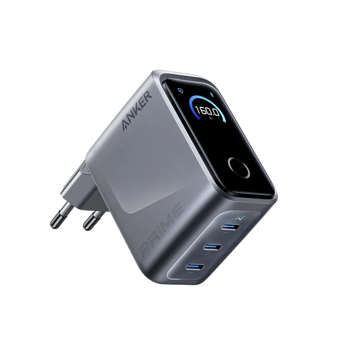

Anker Prime Charger Test

anker.com
Dauerhafte AC-Ausgangsleistung 160 W
Ladetechnologie
AC-Eingang (Steckdose) 0 W
Gewicht 220
AC-Ladezeit 0–80%
Garantie 1 Jahre
Für wen geeignet
Stärken
Kompromisse
Laden und Erweiterung
Häufig gestellte Fragen
Wo kaufen: Die Preise schwanken je nach Herstellerangeboten. Prüfe vor dem Kauf den aktuellen Preis und eventuelle Paketrabatte.